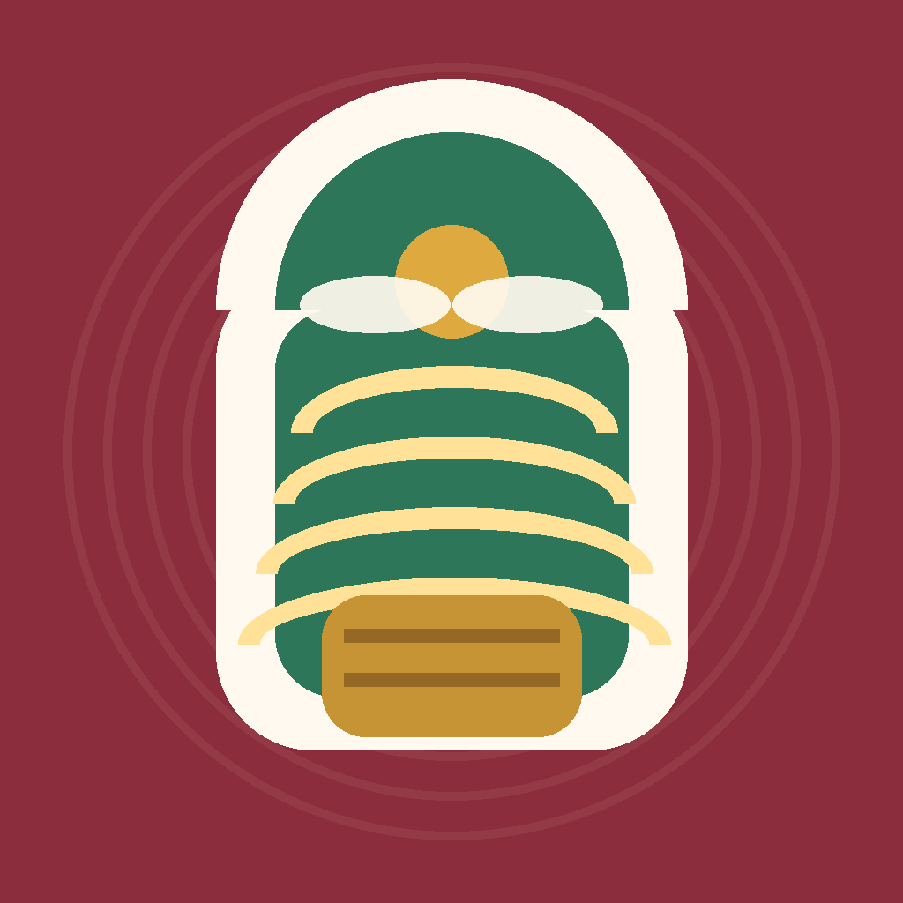

شاهدها من أرضها
جارٍ فتح العرض التفاعلي…
نسخة تجريبية v0.3؛ المنتجات والأسعار أمثلة. البث والدفع والتوصيل ليست خدمات فعلية في هذا العرض. لا تدخل بيانات حساسة.
قد يستغرق الفتح الأول بعض الوقت بحسب اتصال الإنترنت.